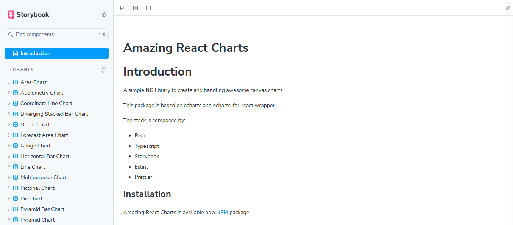

Quirons
Sistema de saúde ocupacional desenvolvido pela NG-Informática. Principais contribuições e resultados:
- Correção de loops infinitos e outros bugs, aumentando a performance em ~60%.
- Reorganização da arquitetura de pastas e separação de lógica e estilos.
- Atualização de bibliotecas, reduzindo ~95% das vulnerabilidades.
- Criação de testes unitários (Jest) e E2E (Cypress).
- Correção de falhas em pipelines de CI/CD.
- Melhorias de responsividade e UX.
- Otimização de requisições com backend.
Keepfy
Plataforma CMMS para gestão de manutenção. Principais contribuições e resultados:
- Otimização de renderização e remoção de condições de corrida (~55% mais rápido).
- Organização da arquitetura e padronização de código.
- Atualização e substituição de bibliotecas, reduzindo vulnerabilidades (~95%).
- Implementação de testes unitários (Jest) e E2E (Cypress).
- Melhorias na responsividade e UX.
- Integração otimizada com backend.
Flipper-UI
Design system usado no Quirons e Keepfy
Biblioteca interna open-source. Principais contribuições e resultados:
- Criação de componentes reutilizáveis, acessíveis e responsivos.
- Refatoração para performance e clareza de código.
- Correção de problemas de dependências.
- Criação e melhoria de testes unitários (Jest).



Amazing React Charts
Biblioteca de gráficos usada no Keepfy
Biblioteca open-source para visualização de dados. Principais contribuições e resultados:
- Implementação e otimização de componentes de gráficos interativos.
- Refatoração de código para maior performance.
- Correção de problemas de pacotes e dependências.
- Criação e melhoria de testes unitários (Jest).


Tegra
Novo site institucional e sistemas internos da empresa. Principais contribuições e resultados:
- Entrega de telas e componentes com fidelidade de 100% ao Figma.
- Otimização de SEO e performance (~80% mais rápido).
- Otimização de imagens e minificação de assets.
- Criação de componentes reutilizáveis e arquitetura organizada.
- Garantia de responsividade e acessibilidade.
- Participação em produtos de clientes com foco em performance e UX.